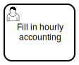

Robocorp Code in action
It’s now time to write our first Zeebe orchestrated Robot Framework automation. In a previous exercise we had  user task for just throwing a dice. Let’s implement automation for a process with similar task:
{kind=link}
We can also reuse the same DMN:
../speech/pick-a-sentence.dmn../speech/pick-a-sentence.html
Launch Robocorp Code
Create a new robot
{kind=link}
Create as child folder
{kind=link}
Choose standard robot
{kind=link}
Give robot name
{kind=link}
Implement robot tasks
{kind=link}
tasks.robot
*** Settings ***
Library RPA.Robocorp.WorkItems
Library random
*** Tasks ***
Throw D20
${min}= Convert To Number 1
${max}= Convert To Number 20
${result} Randint ${min} ${max}
Create Output Work Item
Set Work Item Variable result ${result}
Save Work Item
Configure robot tasks
{kind=link}
robot.yaml
# For more details on the format and content:
# https://github.com/robocorp/rcc/blob/master/docs/recipes.md#what-is-in-robotyaml
tasks:
# Task names here are used when executing the bots, so renaming these is recommended.
Throw D20:
robotTaskName: Throw D20
condaConfigFile: conda.yaml
environmentConfigs:
- environment_windows_amd64_freeze.yaml
- environment_linux_amd64_freeze.yaml
- environment_darwin_amd64_freeze.yaml
- conda.yaml
artifactsDir: output
PATH:
- .
PYTHONPATH:
- .
ignoreFiles:
- .gitignore
Dry run robot
{kind=link}
Wrap robot package
{kind=link}
Launch RCC integration

RCC loads robots
{kind=link}
RCC debug logging
{kind=link}
RCC logs at storage
{kind=link}
Launch Zeebe Play
Process completed
{kind=link}
Resource summary
speech-request.bpmn
../speech/pick-a-sentence.dmn../speech/pick-a-sentence.html

dice.zip